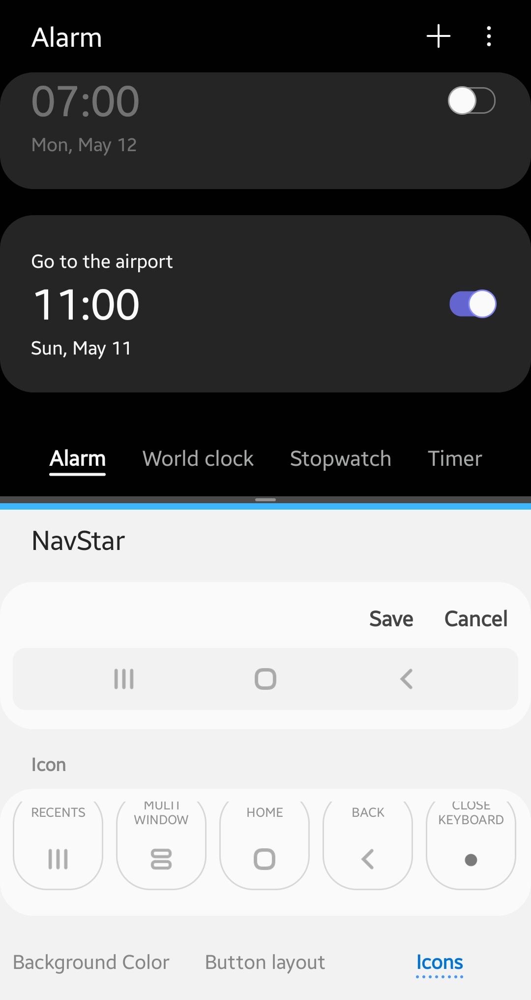
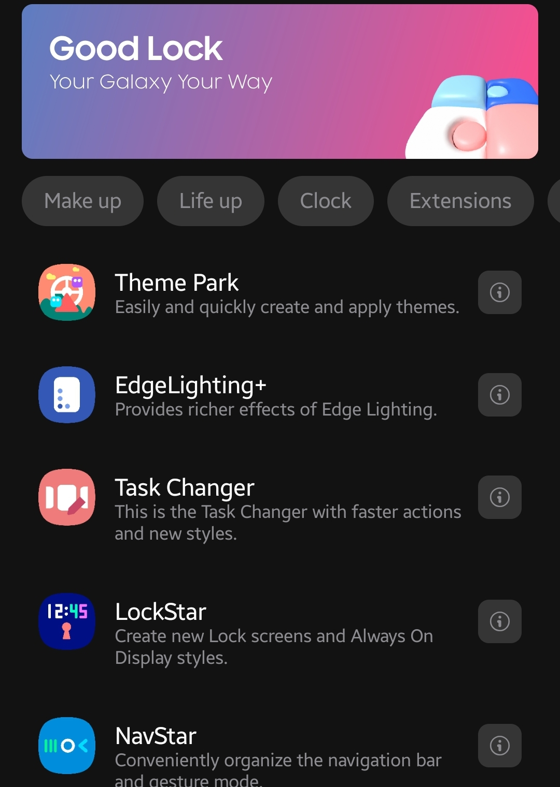
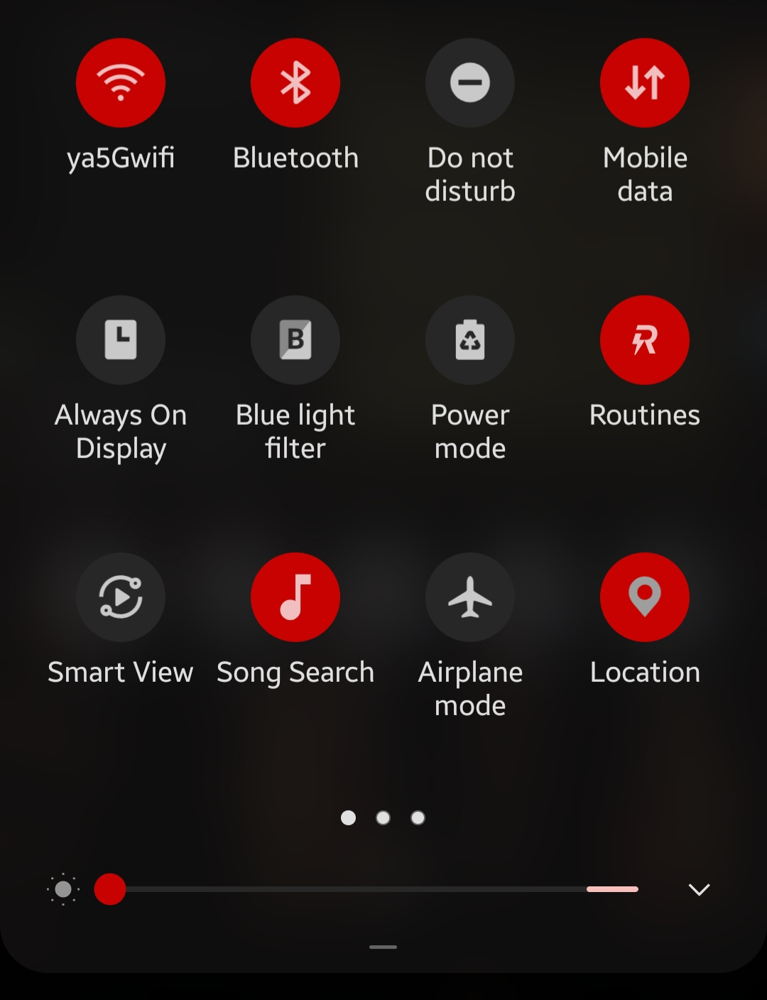
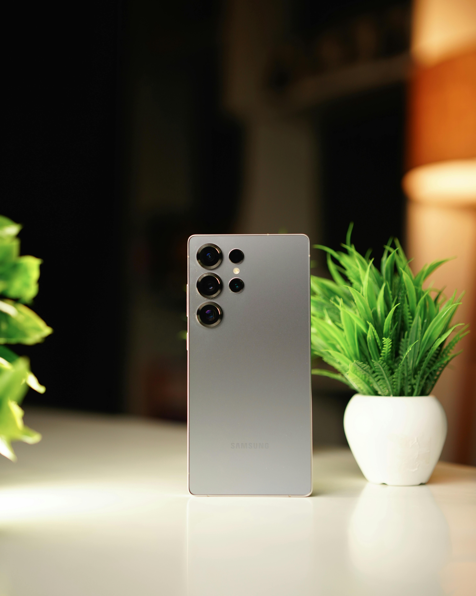
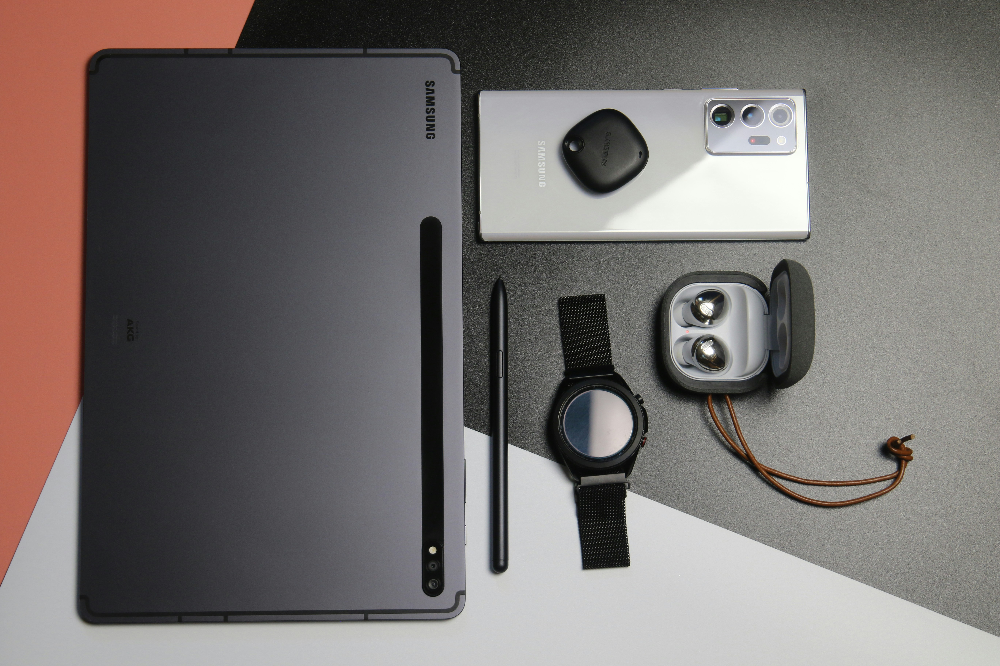
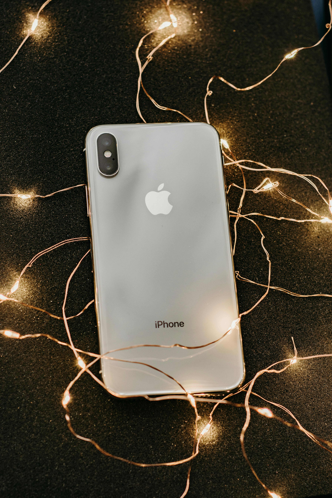
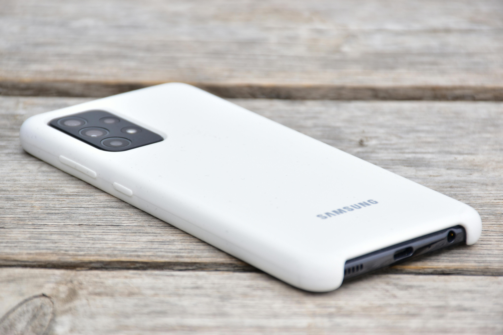
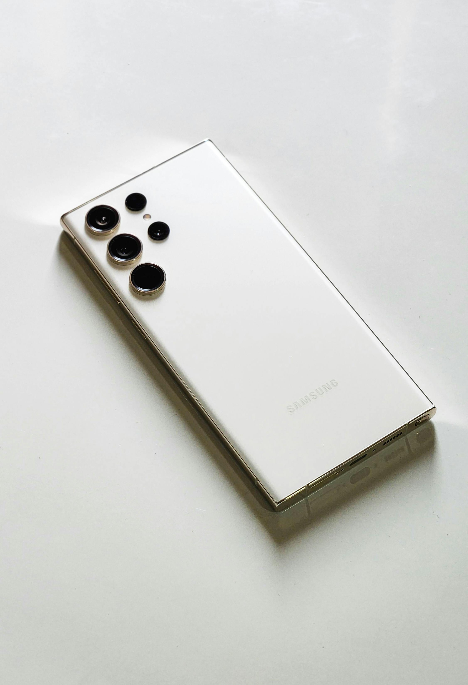
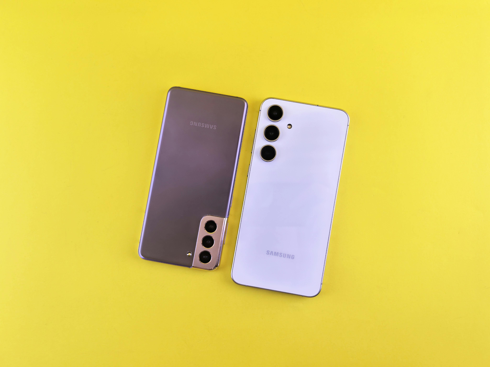
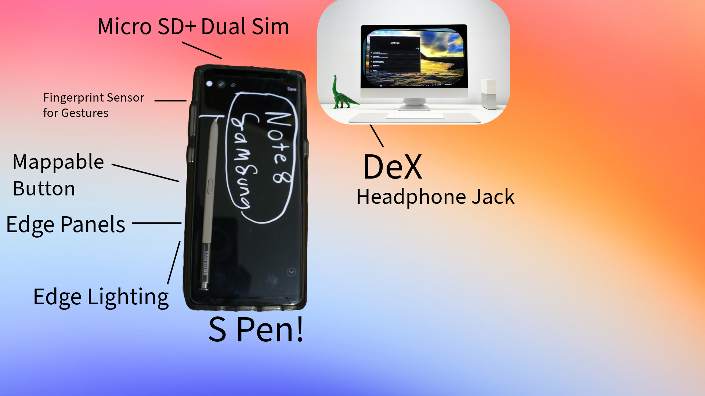

Have you ever wondered which smartphone you should buy? Well, the debate of which smartphone is the best is controversial, complex, and personal. There are so many companies to choose from, but the most popular are Samsung© and Apple©. Proponents for Samsung’s phones state that Samsung Galaxy™ devices are more customizable, and have superior battery life. Opponents state that the UI (User Interface) is hard to understand, and too complex for users. But if you dig deep, the truth is evident. Samsung phones edge out iphones™ in tons of ways, making them a much better pick for almost anyone looking for a new device. Here’s why.

A big advantage for Samsung is that they have a much wider range of software customization that Apple just doesn’t have. For example, on Samsung Galaxy™ devices, you can install the Samsung-made Good Lock™ app, which gives your phone new features and layouts, like quick panel and navigation bar customizaion. The Verge, a popular tech website says, “[Good Lock] lets you customize the quick panel– that's the gallery of options that appear when you drag down from the top of the screen.” With Good Lock, you can even change the volume slider colour and animations! Pretty much any animation that exists on the phone is customizable. Good Lock provides Samsung phones with unparalleled customization that improves efficiency and lifestyle, with much more than Apple has to offer. Samsung's competitors may claim that all this customization makes the phone harder to use, and understand. However, you can disable these settings, since Good Lock is a Samsung-made app. Even if you do require help, Samsung’s website lists different types of support as well, such as “Order help,” “Smart things help,” and “Repair help.” You can even have a chat with a real Samsung employee on the site! You have access to all of these support options as long as you have a Samsung account, which most users will have.


Samsung also has way more variety in their product lineup than Apple. They make over 50 models of smartphones a year, from $160 to $1200. They have high end phones with built in styluses, phones that fold in half, and by stark contrast, Apple makes a tenth of the phones, and at a much more expensive price. For example, Apple’s own website still sells Iphone 14s, from two years ago! That’s likely because they need more options to sell, and so they have to resort to selling older, less powerful phones, and only $200 cheaper than the current generation. This is terrible for the consumer, who gets two year old hardware with less software support that is more expensive than a current generation Samsung phone. Samsung has way more variety and integration within their products, and Apple has only a few devices in their lineup. Therefore, if you need a new phone, there are so many Samsungs to choose from, letting you find the perfect one for you.

Samsung Smart Things connects the entire Samsung ecosystem.
Samsung has a much bigger and vast product ecosystem than Apple. Apple has a few pricey laptops, earbuds and tablets. Whereas, Samsung has not just tablets, laptops, and earbuds, but appliances, smart rings, TVs, and even cars! All of these products can connect to a Samsung account. For example, Samsung’s website has eight navigation tabs, with many product categories, from Computing & Displays to TV, Audio and Accessories. Samsung’s ecosystem is more integrated in that it has many more products that can work together seamlessly.

Samsung phones also have a much longer battery life than Iphones. For example, Arun from Mrwhosetheboss, a prestigious tech Youtube channel ran a sophisticated battery test and comparison around the S24 Ultra and all the Iphone 16s. The Samsung Galaxy S24 Ultra outlasted all the other I phones by over one entire hour, or 11%. He said, “The Samsung actually did just go and do it. It beat every Iphone.” This battery domination, combined with the Samsung having an S-pen stylus that takes up a lot of space, shows massive care and innovation to be able to fit a 5,000 Mah battery cell, instead of the Iphone’s 4,600, in a smaller body. Samsung really showed off how much they care about battery life, and that was last year. This year's battery life will be increased even further over the iPhone.


Samsung display panels are also ahead of their apple counterparts, in many factors, like glare, brightness, dimming, and bezels (the area of black around a screen). For example, Marques, from tech Youtube channel MKBHD says in his S24 Ultra review, “So now it’s {the screen} up to a max 2,600 nits, which is awesome outdoors or anywhere. But it also gets extremely dim at night too … {they} brought up the display right up to the very corners with some of the thinnest bezels we’ve ever seen. Plus there’s also this new anti-reflective coating on this Gorilla Glass Armour that makes a noticeable difference with certain light hitting it at off-axis angles. And then, there is a crazy fast ultrasonic fingerprint reader underneath to top it all off.” Samsung displays simply have much more polish and thoughtful attributes than Apple’s contain.

Many Samsung opponents and competitors will complain about the price of Samsung’s top end phones, because it's true, the S24 Ultra has a price tag $200 more expensive than the Iphone 16 Pro Max. However, not only does Samsung have less expensive options, like the wildly cheap Galaxy A series, but their expensive phones have insane trade-in deals, like on their new S25 Ultra phone. For instance, Samsung’s website says, “Save up to $1,200+. Get up to $900 instant trade-in credit and up to $300 Samsung credit. Use this credit on upgraded storage or bundle offers.” Another factor is that Apple will support the Iphones for only six years, compared to Samsung’s 7. Plus, some carriers like Verizon give you free or discounted Samsung devices, especially for cheaper models. All of this adds up into Samsung’s favor, with trade-in deals and storage offers, and the fact the Samsung provides 7 years of software updates makes Samsung equivalent or better than Apple in price and overall value.

Samsung Galaxy phones have tons of extra software features. My eight year old Galaxy Note8 has more software features and customization than the latest Iphone. For example, there are tons of quick gestures and shortcuts in the settings, like Samsung Pay Quick Swipe. Smart alert, sensor gestures, edge lighting, edge panels, just to name a few, are all Samsung exclusive features buried in the settings! No other company has them, especially not Apple. Therefore, most Samsung-made apps contain some nice to have, extra software features baked into them, like the contacts app letting you swipe right to call, and swipe left to message. A huge feature we haven’t even accounted for yet is the S-pen; a stylus that clicks into the phone on flagship Samsungs with tons of features such as Bixby Vision, translation, and air command. This also has a bonus effect of mobile editing being more effective and precise. It is evident that Samsung has way more software features and shortcuts than Apple, leading to user experience being easier and much more efficient.

These are all of the features that the 8 year old Galaxy Note8 has that the iphone 16 Pro lacks.
Apple is also usually the first to remove features on their phone, like the headphone port, MicroSD support, and repairability. An example of this is with the USB adaptors included in phone boxes. Apple took out the adapter from their box in 2020. Apple claims that this is for the environment, but not shipping it is actually detrimental for the environment, especially for people who are getting their first phone, who have to buy another bulky package just to get a charging adapter. Apple even removes ports from their laptops! Their new Macbooks do not have USB-A, which is still a very popular method of data transfer. Arun Maini again said, “You’re probably starting to get the picture. If they do that; four sets of packaging, four separate delivery trips.” This is a problem, caused primarily by Apple, just so they can make a little more profit, and it is way worse for the environment than just having a slightly bigger box.

So, my conclusion is that Samsung phones are generally better than iPhones in many aspects, and that many Apple users are missing out on Android and Samsung features that they may love, and prices that will allow them to save more money, or enhance their smartphone experience by using the extra money for a pair of wireless earbuds. For users that will use their phones longer, who like customisation, and want great cameras and extra features, Samsung is a great pick, but if you want the software that just works when you set it up, and has a very controlled software enviroment, or if you already use other Apple products, the iPhone will be fine for you. But with ecosystem and other products aside, I think that Samsung phones are a better pick for a new phone, and if you are an Apple user that is on the fence, I would say to get a Samsung phone.